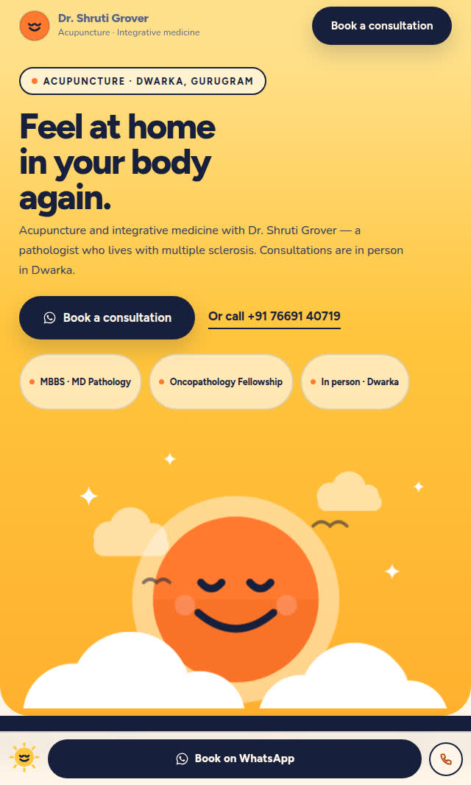

Option 7
Sunrise
Warm yellow, orange and cream: a smiling sun rises out of the clouds, and every condition gets its own small character. The closest of the six to Headspace.
Motion: the sun rises over about three seconds, four cloud layers drift, the condition characters pop in, and the dotted path in the first-visit section draws itself while a companion sun walks it. Nothing moves for people who ask for reduced motion.